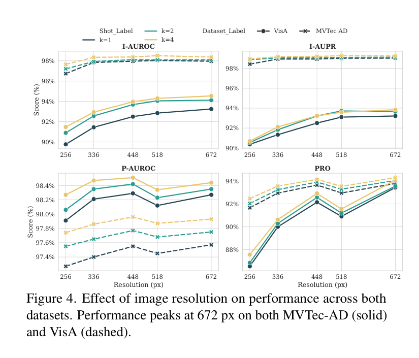
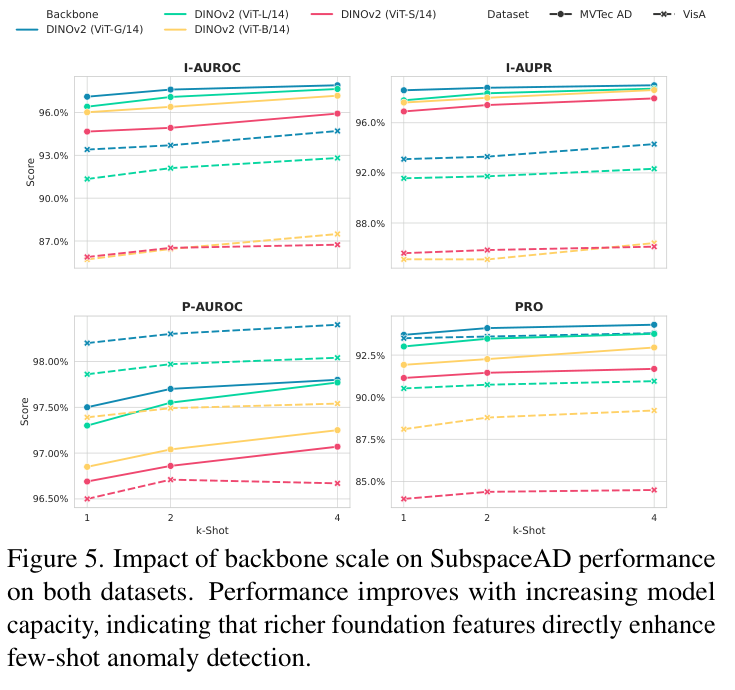

04 · core mechanism
关键机制：子空间不能“太完整”
解释方差阈值 tau = 0.99
保留主要正常变化，同时保留能暴露异常的残差方向。

05 · evidence
实验结论：简单投影能打到强基线
97.1%
MVTec-AD 1-shot I-AUROC
97.5%
MVTec-AD 1-shot P-AUROC
93.4%
VisA 1-shot I-AUROC
98.2%
VisA 1-shot P-AUROC

谨慎结论
SubspaceAD 大多数指标领先或持平，但不是每个单项都绝对第一；优势主要来自强基础特征和合适残差空间。
06 · ablation
关键消融：性能来自“特征质量 × 残差空间”


